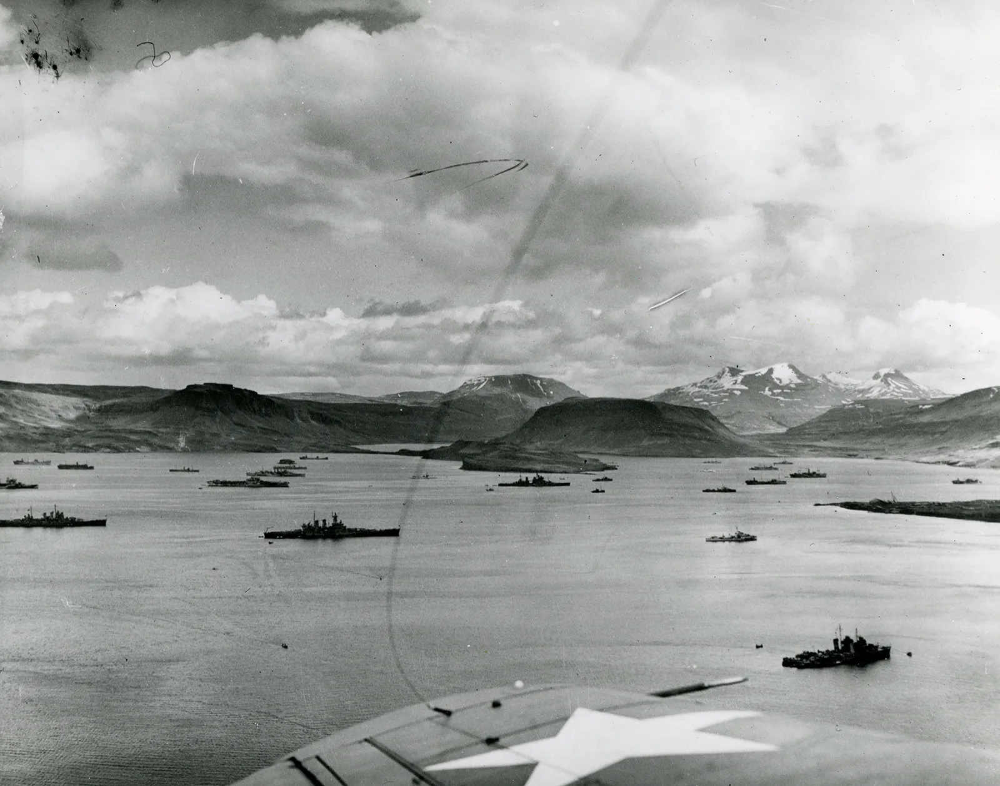

The Project:
What started as an idea to visualize World War II equations relating to convoys has transformed into a research project in identifying factors which put convoys at risk and predicting if convoys were at high or low risk some 80 years later. Currently, North Atlantic convoys of the denominations HX, SC, OB, ON, & ONS are examined with more denominations to be added in the future. The main focus of the project is predicting which specific convoys are at high risk (defined as at least one ship sunk) and low risk (defined as no ships sunk) through machine learning models and classifiers. Additional aspects of the project include feature analysis, data visualization, and time series analysis. More information on the data and other aspects of the project can be found in the Additional Info section.
Outline of Sections:
Convoy Classifiers: The machine learning models and classifiers used to predict convoys at risk.
Convoy Data Visualization: Graphs and visuals made from the collected data.
Convoy History (Not Finished): A brief history on the WWII convoys including their role in the war and techniques used to hamper U-Boats.
Original Project: My original project which focused on visualizing WWII equations relating to convoys.
Additional Info (Not Finished): Information on the data used in the project.